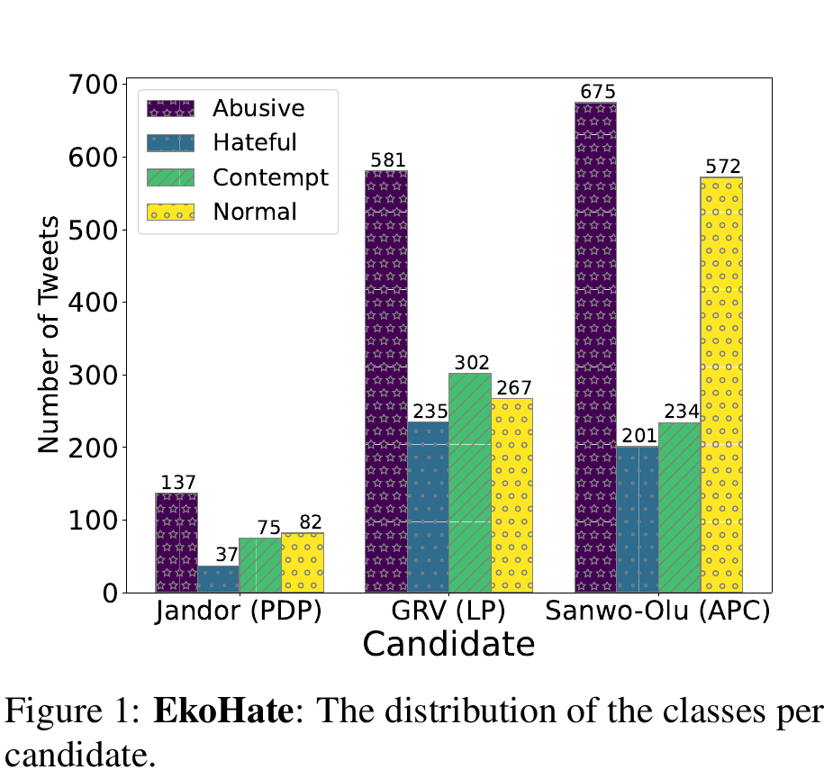

ESPRESSO: An Effective Approach to Passage Retrieval for High-Quality Conversational Recommender Systems
AAAI 2025
Taeho Kim, Hyeongjun Jang, Juwon Yu, Taeuk Kim, Hyunyoung Lee, Jihui Im, Sang-Wook Kim
One-Line Summary
ESPRESSO introduces adaptive item selection and relevance-based groupwise learning for passage retrieval in conversational recommender systems, achieving up to 35.91% higher Hit@3 than the best of 8 competing methods and significantly improving the factuality of generated recommendation responses.

Figure 1. A retrieval-augmented CRS framework that follows ESPRESSO's proposed directions. Given a user's dialog (e.g., asking for a Jackie Chan movie recommendation), the recommendation module selects items (e.g., "Rumble in the Bronx"), the passage retrieval module retrieves factual passages describing the item, and the generation module produces a grounded response. A labeling module generates pseudo-relevant passage labels for training.
Background & Motivation
Conversational Recommender Systems (CRS) provide tailored recommendation responses via a chat interface, including both a preferred item and an accompanying explanation. The implementation of CRS consists of two core components: (1) a recommendation module that predicts items a user is likely to prefer, and (2) a generation module that delivers recommendation responses containing not only the recommended item but also an explanation. However, since language models primarily rely on intrinsic knowledge for generating responses, CRS are prone to producing factually incorrect explanations (i.e., hallucinations), particularly when the model lacks sufficient knowledge about the recommended items.
A natural solution is to employ retrieval-augmentation strategies: given a dialog, first retrieve passages describing the features of recommended items, then generate a response grounded in those passages. However, the authors point out that existing passage retrieval methods are insufficient for properly serving CRS in their original forms, because they are neither designed nor trained to retrieve passages that align well with user preferences.
Two Essential Directions for Passage Retrieval in CRS:
Direction 1 -- Align retrieval with user preferences: The passage retrieval module should utilize the items selected by the recommendation module as additional input. Existing CRS methods typically select a fixed number of items (e.g., only the top-1 item). If this top-1 predicted item does not match the user's actual preference, all retrieved passages will be irrelevant, harming response quality.
Direction 2 -- Train retrieval with pseudo-relevant labels: CRS datasets do not provide explicit passage-level relevance labels. Manually labeling which passages are relevant requires significant human labor and cost, especially since CRS responses often involve lengthy descriptions. The passage retrieval module should therefore be trained using pseudo-relevant passages determined by an automatic labeling module.
The key insight of this work is that naively following these two directions is insufficient -- the recommendation module can make mistakes (selecting wrong items) and the labeling module can produce noisy labels (mislabeled passages). ESPRESSO is the first work in the CRS domain to propose robust methods that address both sources of error, through adaptive item selection and relevance-based groupwise learning.
Proposed Method
ESPRESSO (Enhanced paSsage retrieval aPpRoach via adaptivE item Selection and relevance-baSed grOupwise learning) operates within a three-module CRS framework, as illustrated in Figure 2 of the paper. The overall process is: (1) the recommendation module predicts user preferences based on the dialog and profile, then adaptively selects items; (2) the passage retrieval module retrieves top-K relevant passages based on the dialog and selected items; (3) the generation module (RALM) produces a recommendation response grounded in the retrieved passages.
1
Preference Estimation
Given a dialog D, the recommendation module first predicts a preference score for each item i using a BERT-based encoder. The dialog and user profile f (e.g., age, gender) are concatenated and encoded into a d-dimensional representation via BERT. The preference score is computed as the dot product between this representation and a learnable item embedding: y_rec_i = w_i * BERT_CLS([D : f]). This provides a ranked list of candidate items ordered by predicted user preference.
2
Adaptive Item Selection
Instead of always using just the top-1 predicted item, ESPRESSO adaptively selects a variable number of items based on the recommendation module's confidence. A confidence score C(i) is computed via softmax over preference scores for all items. Items are selected in descending order of confidence until the cumulative confidence exceeds a threshold (sigma_conf, e.g., 70%). For example, if the top-1 item has 50% confidence and the top-2 has 35%, both are selected (cumulative 85% > 70%). This ensures the user's preferred item is included even when the top-1 prediction is wrong, while avoiding noise from low-confidence items. When the top-1 prediction is confident enough, only that single item is used.
3
Dual-Encoder Passage Retrieval
The dialog D and selected items S are concatenated into an enhanced dialog D_bar = [D : S]. A dual-encoder architecture with two Transformer encoders (E_D for dialogs, E_P for passages) encodes both the enhanced dialog and each passage p in the corpus C into d-dimensional representations. The retrieval score is computed via dot-product similarity: y_ret_p = h_D_bar * (h_p)^T. The top-K passages with the highest retrieval scores are returned. Pre-trained encoders from existing methods (e.g., Contriever, CoT-MAE) can be used as initialization for E_D and E_P.
4
Pseudo-Relevant Passage Labeling
Since CRS datasets lack explicit passage-level labels, ESPRESSO automatically generates training labels using a two-stage labeling module. First, an enhanced response is constructed by concatenating the ground-truth response r, the target item i_r, and the user's last utterance u_T: r_bar = [r : i_r : u_T]. This enhanced response is scored against all passages using BM25 to capture lexical similarity, selecting the top-10 candidates. Then, GPT-4o reranks these 10 candidates based on deeper semantic relatedness, producing the final top-M pseudo-relevant passages Q = [q_1, q_2, ..., q_M] (where M < 10). This two-stage process combines the efficiency of BM25 with the semantic understanding of a large language model.
5
Relevance-Based Groupwise Learning
Standard contrastive learning treats each pseudo-relevant passage independently, but some may be mislabeled by the imperfect labeling module. ESPRESSO addresses this through a novel grouping strategy based on the intuition that while a single pseudo-relevant passage may be mislabeled, the probability of all elements in a group being irrelevant decreases exponentially with group size. Specifically, subgroups are formed by pairing each passage with all higher-ranked ones: G_j = [q_1, q_2, ..., q_j]. The model is trained so that the average retrieval score of each subgroup exceeds the score of negative passages (hard negatives + in-batch negatives), using the loss: L = -log sum_{G_j} exp(y_ret_G_j) / (exp(y_ret_G_j) + sum_{z in Z} exp(y_ret_z)). Lower-ranked passages (more likely to be mislabeled) are always grouped with higher-ranked, more reliable passages, ensuring robust training.
6
Retrieval-Augmented Response Generation
The top-K retrieved passages R are fed to a retrieval-augmented language model (RALM). The generation module produces each token by marginalizing over retrieved passages: Pr(y_i | D, p, y_{1:i-1}) = sum_{p in R} Pr_eta(p | D, S) * Pr_theta(y_i | D, p, y_{1:i-1}), where eta are the ESPRESSO parameters and theta are the generative LM parameters. The generative backbone can be BART-large or LLaMA2, enabling both smaller specialized models and larger LLMs to benefit from ESPRESSO's improved retrieval.
Experimental Results
ESPRESSO is evaluated on two CRS datasets: DuRecDial2.0 (a public English CRS dataset with bilingual parallel dialogs) and KoRecDial (a private non-English CRS dataset). Both datasets have human-annotated related knowledge for each response, used as ground-truth relevant passages. ESPRESSO is compared against 8 passage retrieval baselines and 8 response generation baselines.
Passage Retrieval Accuracy (Hit@K)
Method
DuRecDial2.0
KoRecDial
H@1
H@3
H@5
H@1
H@3
H@5
BM25
0.260
0.425
0.529
0.059
0.142
0.206
DPR
0.384
0.485
0.538
0.127
0.277
0.372
RAG
0.100
0.120
0.122
0.005
0.007
0.007
KERS
0.291
0.415
0.460
0.091
0.177
0.219
DSI
0.376
0.453
0.484
0.059
0.091
0.108
Contriever
0.393
0.497
0.550
0.123
0.278
0.371
RankGPT
0.339
0.460
0.529
0.101
0.164
0.206
CoT-MAE
0.406
0.504
0.561
0.134
0.283
0.392
OURS+DPR
0.514
0.675
0.725
0.153
0.314
0.414
OURS+Contriever
0.520
0.685
0.735
0.141
0.313
0.423
OURS+CoT-MAE
0.523
0.685
0.738
0.154
0.315
0.423
Adaptive Item Selection Analysis
The authors analyze how different item selection strategies affect retrieval accuracy, breaking down by whether the top-1 predicted item matches the ground-truth (G=top-1, covering 79.4% of test samples) or not (G!=top-1, 20.6%).
Selection Method
G=top-1
G!=top-1
Overall
S=top-1 (fixed)
0.815
0.003
0.648
S=top-N (fixed, N=2)
0.749
0.160
0.628
S=top-sigma_conf (adaptive, 70%)
0.810
0.156
0.675
When the top-1 prediction is correct, using only that item achieves 0.815 Hit@3 -- adding more items introduces noise. When the top-1 is wrong, fixed top-1 selection catastrophically fails (0.003), while expanding the pool helps. The adaptive method achieves near-best accuracy in both scenarios, yielding the highest overall accuracy (0.675) with a 4.2% gain over top-1 and 7.5% over top-N.
Groupwise Learning Strategy Comparison
Three learning strategies are compared as the number of pseudo-relevant passages M varies from 1 to 3: standard contrastive learning (CL), naive groupwise learning (GL, single group of all passages), and relevance-based groupwise learning (RGL, nested subgroups). When M > 1, both grouping methods consistently outperform CL, validating that grouping mitigates mislabeling noise. RGL further outperforms GL by grouping lower-ranked (less reliable) passages only with higher-ranked (more reliable) ones, achieving the best Hit@3 of 0.685 at M=2.
Impact on Response Generation (BLEU Scores)
Method
DuRecDial2.0
KoRecDial
BLEU2
BLEU3
BLEU4
BLEU2
BLEU3
BLEU4
GPT2-base
0.080
0.040
0.020
0.065
0.032
0.018
BART-large
0.132
0.083
0.051
-
-
-
RAG
0.161
0.108
0.072
0.100
0.056
0.034
UniMIND
0.147
0.083
0.055
0.092
0.050
0.028
LLaMA2
0.144
0.094
0.060
-
-
-
BART(ESPRESSO)
0.197
0.137
0.093
0.123
0.073
0.045
LLaMA2(ESPRESSO)
0.209
0.147
0.103
-
-
-
Up to 35.91% improvement in passage retrieval: OURS+CoT-MAE outperforms the best baseline (CoT-MAE) by 28.82%/35.91%/31.55% in Hit@1/Hit@3/Hit@5 on DuRecDial2.0 and 14.93%/11.31%/7.91% on KoRecDial.
Orthogonal enhancement across backbones: Applying ESPRESSO's two core ideas to DPR, Contriever, and CoT-MAE consistently and substantially improves all three, demonstrating that the ideas are backbone-agnostic. For example, OURS+DPR improves DPR by 33.85%/39.18%/34.76% in H@1/H@3/H@5 on DuRecDial2.0.
Task-specific supervision outperforms GPT-4o: Fine-tuned CoT-MAE outperforms RankGPT (which uses GPT-4o for reranking) by up to 19.76% in Hit@1 on DuRecDial2.0, underscoring that domain-specific training is more effective than zero-shot LLM reranking for CRS passage retrieval.
Retrieval quality directly drives generation quality: As passage retrieval accuracy increases, response generation BLEU scores improve proportionally. BART(OURS+CoT-MAE) enhances BLEU scores by up to 16.25% compared to BART(CoT-MAE), confirming the tight coupling between retrieval and generation quality.
ESPRESSO outperforms even larger models: RAG (which leverages retrieved passages) outperforms GPT2-large and LLaMA2 despite having fewer parameters, highlighting that retrieval augmentation is more impactful than model scale alone. BART(ESPRESSO) further outperforms RAG by 22.36%/26.85%/29.17% on DuRecDial2.0.
GPTEval confirms quality gains: Beyond BLEU scores, GPTEval evaluations demonstrate that ESPRESSO significantly outperforms competitors in informativeness, fluency, and relevance of generated responses, providing a more holistic assessment of response quality.
Why It Matters
As conversational AI becomes more prevalent in e-commerce and content platforms, providing accurate and trustworthy explanations alongside item recommendations is essential for user trust. ESPRESSO makes several important contributions:
First principled approach to passage retrieval for CRS: ESPRESSO is the first method in the CRS domain to (1) adaptively select a variable number of items from the recommendation module based on confidence scores, and (2) apply groupwise contrastive learning that accounts for relevance ranks. Both ideas are novel contributions to the CRS literature.
Practical and modular design: The two core ideas are orthogonal to the choice of retrieval backbone -- they can be plugged into any existing neural retrieval model (DPR, Contriever, CoT-MAE) to boost its performance. This makes ESPRESSO a flexible enhancement rather than a replacement, lowering the barrier to adoption.
Addresses hallucination in recommendation: By grounding CRS responses in retrieved factual passages, ESPRESSO directly tackles the hallucination problem that plagues generative recommendation systems. GPTEval metrics confirm improvements in informativeness, relevance, and fluency.
No manual annotation required: The automatic labeling pipeline (BM25 candidate selection + GPT-4o semantic reranking) eliminates the need for expensive human annotation of passage relevance, making the approach scalable to new domains and datasets.
Robust to upstream errors: Both ideas are designed to handle imperfect inputs gracefully -- adaptive item selection handles incorrect top-1 predictions from the recommendation module, and relevance-based groupwise learning handles mislabeled pseudo-relevant passages from the labeling module. This robustness is critical for real-world deployment.